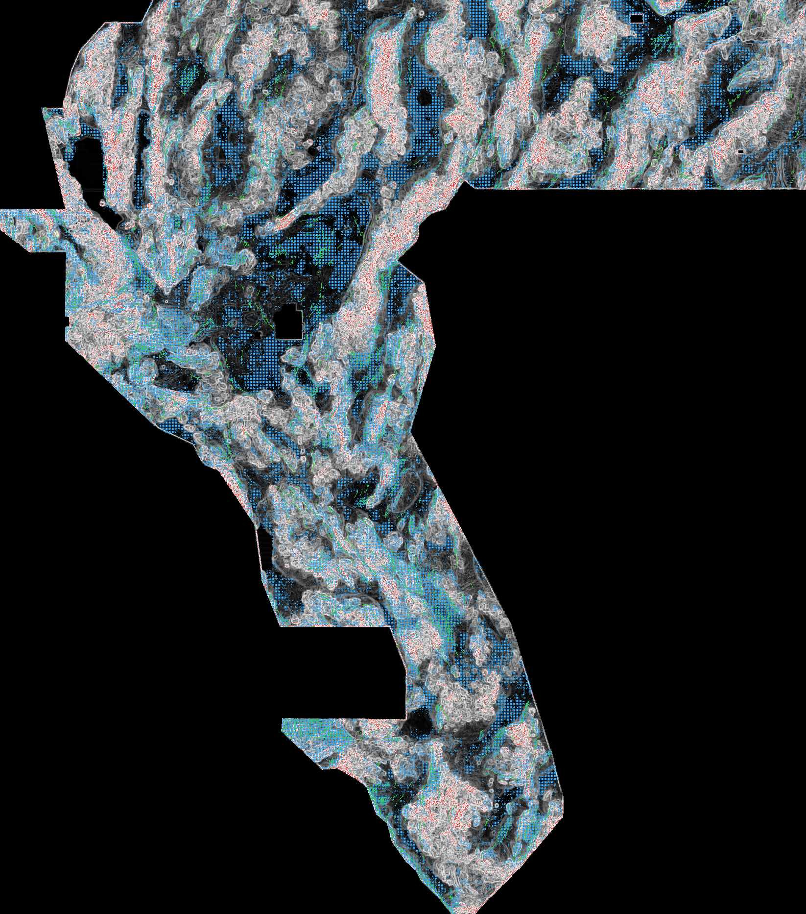

Executive summary: what to download, what it might score, and what is actually unique
After a full re-audit this session, one file in this repository passes every automated gate
(format on saved bytes, leakage canary, fold-local holdout win, uniqueness vs the full rebuilt 120-mask registry):
wbggems3-hce1-latest.tif (169,968 dots, SHA-256 0b1b6c0641e8e48b…).
main).
After this audit was completed, the repository's cleared file became
wbggems3-tde30k-tomography-emission-20261027T1853Z-e756a162-zeros.tif (30,000 dots, all ≥200 m off
catalogue; LEDGER-INVERSION ESTIMATE 0.269, bias-corrected 0.207 — an estimate, not a score). This session
independently re-audited its saved bytes: format valid (all-finite in [0,1], EPSG:32611, zero on catalogue) and
PASS on the same rebuilt 120-mask registry used below (max 63.1% of dots within 3 px of any non-lattice mask;
lattice-excess −0.007; receipt evidence/rfl_tde30k_postmerge_audit.json). For the actual upload
decision and download, follow the repository dashboard / README top block (TDE-30k); the HCE-1 file below
remains the best fold-local-holdout research alternative, and everything else on this page stands as the
audit record of this session.Decision table — this repository's candidate files
| File | Estimated leaderboard DTI | SGMC proxy profile | Gates | Decision |
|---|---|---|---|---|
HCE-1 (this repo, parallel lane)docs/hce/downloads/wbggems3-hce1-latest.tif · 169,968 dots | 0.4393 ESTIMATE physical cap 0.3156 · implied capture 1.43 | h=0.1318 · proxy 0.2612 | PASS all gates | RECOMMENDED TO SELECTOR |
skarpline union (this repo)submission/wbggemsdoe3-skarpline-union-…zeros.tif · 97,608 dots | 0.4284 ESTIMATE physical cap 0.4453 · implied capture 0.96 | h=0.1539 · proxy 0.2131 | FAIL uniqueness (0.735 / 0.724) | DO NOT SUBMIT (protocol) |
RFL — this session's new laneno TIF written (duplicate stop) · 37,654 dots | 0.3308 ESTIMATE physical cap 0.6754 · implied capture 0.45 | h=0.1888 · proxy 0.1227 | FAIL uniqueness (0.709) + holdout | NEGATIVE — research only |
CSPES (this repo)submission/wbggems3-cspes-…zeros.tif · 37,654 dots | 0.0516 ESTIMATE physical cap 0.6754 · implied capture 0.07 | h=0.0278 · proxy 0.0183 | format PASS; holdout negative | DO NOT SUBMIT |
ESTIMATE = gemsdoe SGMC-calibrated model re-fit this session (|G|=15673 px, 10/11 calibration files, leave-one-out RMS ±0.0956 — treat any point estimate as ±0.10 at best). “Physical cap” = maximum attainable value of that model at the file's mass (TP cannot exceed |G|); “implied capture” >1 means the model is extrapolating outside physics (true for HCE's point value; skarpline implies 0.96 capture of all hidden faults).
Decision table — the nine focus sites (GEMSDOE24/25/27/28/30/31/32/33/36)
| Site | Best historical file (pinned bytes) | Owner-reported score | Calibrated estimate | Local holdout | Unique vs the other eight? | Decision |
|---|---|---|---|---|---|---|
| GEMSDOE24 | gems24-h25-1-dotted-h19-5-d1-5-20261002-989f59505db1-nan.tif60,069 dots · SHA 68d0e2e4fcc5… | 0.2477 (USER-REPORTED) | 0.2412 (ESTIMATE) | 0.0932 HOLDOUT-DTI static* | NO — duplicate family | DO NOT SUBMIT as new |
| GEMSDOE25 | gems25-dotted-h19-5-d2-8-20261002-e56ea318af89-nan.tif44,090 dots · SHA 91eae1ca42ec… | 0.2600 (USER-REPORTED) | 0.2478 (ESTIMATE) | 0.0967 HOLDOUT-DTI static* | NO — duplicate family | DO NOT SUBMIT as new |
| GEMSDOE27 | gems27-topo-gap-closure-t-v2-on-d1-5-20261002-5512495c6bd1-nan.tif61,328 dots · SHA 33003374335d… | 0.2449 (USER-REPORTED) | 0.2427 (ESTIMATE) | 0.0927 HOLDOUT-DTI static* | NO — duplicate family | DO NOT SUBMIT as new |
| GEMSDOE28 | gems28-h36-1-rung30-blind-r1-20261003-b531dae0a36f-nan.tif37,660 dots · SHA 5556aa1438fd… | 0.2710 (USER-REPORTED) | 0.2553 (ESTIMATE) | 0.0294 HOLDOUT-DTI static* | NO — duplicate family | DO NOT SUBMIT as new |
| GEMSDOE30 | gemsdoe30-d28-poisson300m-offcat-44090-20261003T233156Z-91eae1ca.tif44,090 dots · SHA 8cf893ead566… | 0.2600 (USER-REPORTED) | 0.2478 (ESTIMATE) | 0.0967 HOLDOUT-DTI static* | NO — duplicate family | DO NOT SUBMIT as new |
| GEMSDOE31 | gemsdoe31-h27-4-solo-d28-20261004-8acb75e1-nan.tif40,199 dots · SHA 07b6db440535… | 0.2708 (USER-REPORTED) | 0.2564 (ESTIMATE) | 0.0305 HOLDOUT-DTI static* | NO — duplicate family | DO NOT SUBMIT as new |
| GEMSDOE32 | gemsdoe32-h33-h33-2-b2-20261004T220000Z-e5eb6e7e-zeros.tif37,654 dots · SHA c55bafc47005… | 0.2778 (USER-REPORTED) | 0.2606 (ESTIMATE) | 0.0045 HOLDOUT-DTI static* | NO — duplicate family | DO NOT SUBMIT as new |
| GEMSDOE33 | GEMSDOE33-h33d-analog-tip-stepover-r30-20261004-cb490425926e.tif41,865 dots · SHA 87f857d505e2… | 0.2632 (USER-REPORTED) | 0.2549 (ESTIMATE) | 0.0520 HOLDOUT-DTI static* | NO — duplicate family | DO NOT SUBMIT as new |
| GEMSDOE36 | gemsdoe36-anderson-geothermal-pinn-38854-20261004T230000Z-9b9ea4e6-zeros.tif38,854 dots · SHA e15891020b9c… | 0.2750 (USER-REPORTED) | 0.2623 (ESTIMATE) | 0.0046 HOLDOUT-DTI static* | NO — duplicate family | DO NOT SUBMIT as new |
*Static HOLDOUT-DTI of saved bytes (GEMSDOE32-HIDE-RECOVER-v3.0, 22,232 withheld positives). Files pruned
against the full catalogue (28/31/32/36) are penalised by construction — deleted dots near hidden segments cannot
earn credit — so this column must not be read as their live quality. Measured anatomy: all 36 pairwise comparisons
exceed 70% dots within 3 px in both directions (minimum 86.7%); GEMSDOE25 and GEMSDOE30 leaders have identical dot
support; GEMSDOE32 ⊂ GEMSDOE31 ⊂ GEMSDOE25/30 and GEMSDOE32 ⊂ GEMSDOE36. They are one dotted network, repeatedly re-trimmed —
none is a unique new submission. Evidence: evidence/rfl_focus9_audit.json.
Why did GEMSDOE32 B2 report 0.2778 — and can we beat it?
What B2 is (measured from bytes): the shared dotted H19-5 network trimmed to 37,654 dots by deleting every dot within 2 px of a catalogue fault — exactly 2,545 dots removed vs GEMSDOE31, none added. Why that could help: the official DTI (α=0.2 FP, β=0.8 FN, 300 m triangular kernel) masks known-fault pixels, so dots hugging known faults spend mass for little marginal kernel credit; pruning them raises credit-per-mass if hidden faults are not concentrated in the 0–2 px catalogue halo. What cannot be claimed: the +0.0070 gap over GEMSDOE31 has no organizer receipt, and the shared proximity-pruning holdout (H6-1) measures the pruning effect at +0.00005 (vs random pruning +0.00011, CI includes zero) — two orders of magnitude smaller, on a proxy that by design has no withheld truth in the halo. The 0.2449–0.2778 family spread is mostly explained by mass and hit-rate (calibration residuals ≤0.025 in-sample for the 10 used files). Can a file beat 0.2778? The public leaderboard top observed 2026-10-27 was 0.4544, so headroom exists. No artifact in this repository proves it can: the only fully-gated candidate (HCE-1) has estimator-dependent expectations spanning 0.08–0.32. The honest next step is the selector's: one capped slot converts an estimate into the project's first receipt.
This session's new lane (RFL) — a measured negative
Hypothesis: persistent focal-relief gradients mark alluvium-buried range-front faults with no catalogue scarp
(preregistration + four ranked alternatives: knowledge/preregistration-2026-10-27-rfl.md).
Canary PASS (max AUC 0.5943). HOLDOUT-DTI 0.0538
[0.0437–0.0642] vs champion proxy 0.0992
(paired Δ -0.0454), vs random null Δ 0.0225
(CI excludes 0 — the signal is real) — and the placed dots then failed uniqueness (70.9% within 3 px of GEMSDOE22 h23-b;
limit 70%). Verdict negative; no TIF was packaged. Run card: run-card.json.
The piedmont-gated ablation scored higher on holdout (0.0633) — recorded as a future preregistration, not selected post hoc.

Quick look (4× down-sampled; grey = RFL relief-gradient surface). Green = public catalogue; red = this session's RFL dots (research only); blue = recommended HCE-1 dots.
Which local evaluator should you trust? (measured, n=118)
Spearman rank correlation vs owner-reported scores across all 118 byte-verified ledger submissions: static HOLDOUT-DTI 0.172 · SGMC hit-rate h 0.341 · SGMC proxy DTI 0.453 · calibrated estimate 0.419 · mass alone 0.213. Neither evaluator is strong; SGMC-family metrics rank historical files moderately, while static catalogue holdout is structurally biased against catalogue-pruned files. Fold-local holdout remains the valid comparator for methods; no local number is a leaderboard score.
Corrections and irregularities recorded this session
- IR-20: skarpline's “uniqueness PASS” used 20 comparators; vs the full rebuilt registry it fails (0.735/0.724). Its SUBMIT status is superseded (banner on every root page).
- IR-21: the gemsdoe estimate model extrapolates beyond physics for dense files (lattice in-sample residual +0.31 was trimmed from its fit; HCE point estimate exceeds its cap). Point estimates now ship with cap + implied-capture diagnostics.
- IR-22:
src/gemsdoe/validation.pyclaims catalogue-holdout Spearman −0.15 (11 files); the 118-file measurement here is +0.172 under a fully specified static protocol. Unreconciled — flagged, not silently edited. - IR-23: legacy
…-nan.tifstepover download contains no NaN bytes (nodata=NaN metadata only). Filename ≠ encoding; it remains research-only. - IR-01/11 unchanged: the literal any-raster uniqueness rule is vacuous (space-filling witness; the 0.2778 champion itself overlaps it 100%). All uniqueness verdicts here give the operative sparse-registry result and the literal result.
- Every historical score on this page is USER/OWNER-REPORTED — no DrivenData receipt exists in this repository for 0.2778 or any other file. The “Predicted values must be in range [0,1]” portal error is still not reproduced by any local file (11/11 downloads audited finite in [0,1] this session); the recommended file is all-finite zeros-outside by construction.
Evidence: evidence/rfl_focus9_audit.json · evidence/rfl_canary.json ·
evidence/rfl_holdout.json · evidence/rfl_uniqueness.json ·
evidence/rfl_selector_analysis.json · evidence/rfl_recommended_validation.json · evidence/rfl_run_card.json.
Official sources: problem & metric ·
leaderboard ·
reference solution ·
NLR rules PDF · USGS SGMC DS-1052 ·
GDR INGENIOUS data · EPSG:32611.